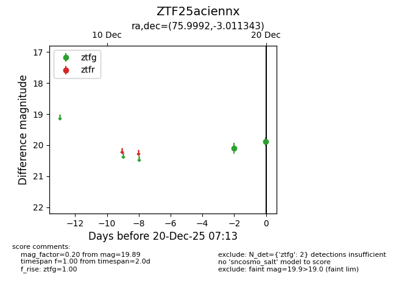
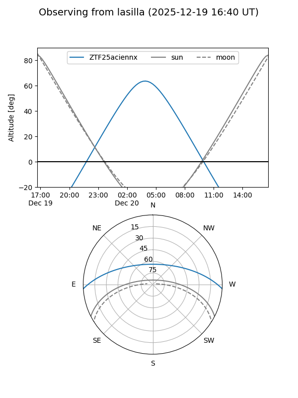
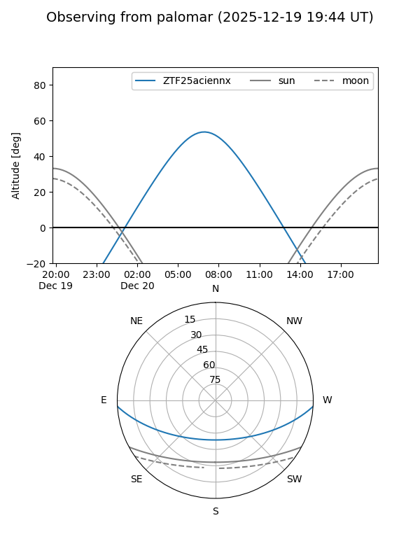

ZTF25aciennx
Target ZTF25aciennx at 2025-12-20 08:24
Aliases and brokers:
FINK: fink-portal.org/ZTF25aciennx
Lasair: lasair-ztf.lsst.ac.uk/objects/ZTF25aciennx
ALeRCE: alerce.online/object/ZTF25aciennx
alt names
ZTF25aciennx (ztf,fink_ztf)
Coordinates:
equatorial (ra, dec) = 75.9992,-3.01134
equatorial (HMS+DMS) = 05:03:59.82,-03:00:40.83
galactic (l, b) = (202.8137,-25.18295)
Flags:
Photometry:
last ztfg=19.89, ztfr=20.07
2 ztfg, 1 ztfr detections
Lightcurve

Visibility


Additional plots